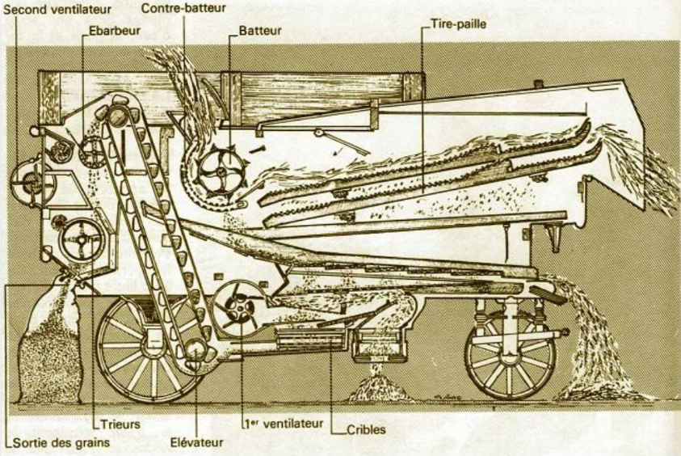

⚙️ Comment ça fonctionne ?
Les gerbes de blé sont apportées à la machine et introduites à l’entrée de la batteuse.
Le batteur tourne rapidement et frappe les épis contre le contre-batteur pour détacher les grains.
Les ventilateurs et les cribles éliminent les impuretés (paille, poussière) pour ne garder que le grain.
Le grain propre est récupéré dans un sac ou un bac, tandis que la paille est rejetée à l’extérieur.
⏳ Époque
XIXe
Début XXe
Après 1950
Aujourd’hui
🛠️ À repérer sur la machine

- Batteur / contre-batteur
- Ventilateurs + cribles
- Tire-paille
- Sortie du grain
🎯 Le petit défi
- 1️⃣ Où entre la gerbe ?
- 2️⃣ Où sort le grain propre ?
- 3️⃣ Où sort la paille ?
🧠 À retenir
La batteuse fixe ne se déplace pas : c’est le blé qui vient à elle, apporté en gerbes.